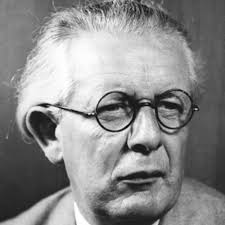

Quem foi Jean Piaget? E suas Ideias?

Jean Piaget foi um grande pensador que
abordava em suas pesquisas e
teorias à psique da criança. É conhecido, principalmente, por conta da teoria da
aprendizagem na educação infantil. Que, resumidamente, diz respeito à quatro estágios do
desenvolvimento
cognitivo e emocional da criança, esses estágios são hierárquicos e não podem existir um sem o
outro.
-
Estágio sensório-motor (0-2 anos), a criança começa a desenvolver as sensações, sua
coordenação motora e começa a reconhecer objetos;
-
Estágio pré-operacional (2-7 anos), inicia-se o desenvolvimento da fala, a criança passa a
nomear os objetos ao redor dela e cria a capacidade memorizá-los (representação mental), o
raciocínio
começa a ser desenvolvido, embora esteja em sua fase inicial;
-
Estágio das operações concretas (7-11 anos), a capacidade cognitiva de resolução concreta já
está desenvolvida, a criança passa a ter uma capacidade melhor de interpretação e já
consegue resolver
alguns problemas básicos. E;
-
Estágio das operações formais (a partir dos 11 anos), Piaget acreditava que esse estágio se
seguia para a vida toda, se desenvolvendo por toda a vida adulta. Esse estágio se trata do
indivíduo pensando por si só, com o raciocínio lógico está desenvolvido e pode ser vista
como uma fase
de total autonomia.